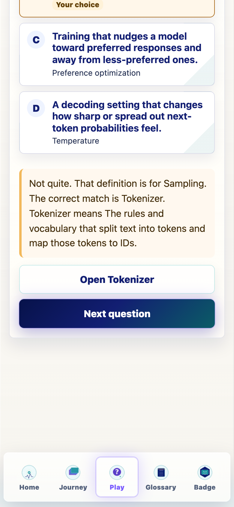
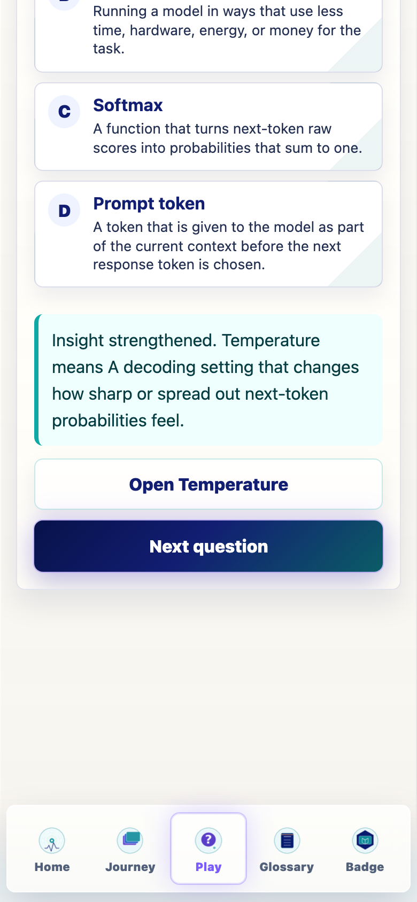
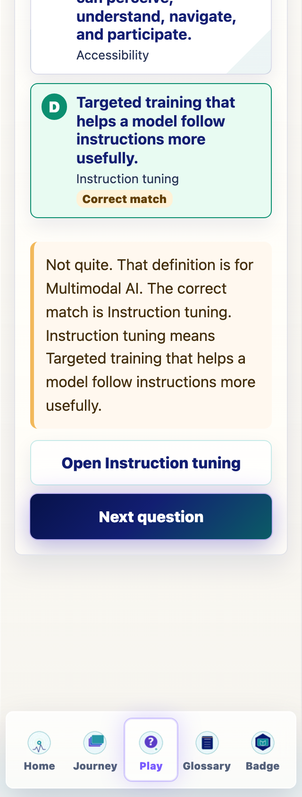

Glossary Dojo Feedback Precision
This pass makes wrong-answer feedback identify which glossary term the selected wrong answer actually belongs to, while preserving Dojo mastery, Journey progress, badge criteria, games, dependencies, generated assets, and checkpoint randomization.
What Changed
- Each Dojo option now carries represented-term feedback metadata.
- Wrong feedback says:
That definition is for [selected term], then names the correct term or correct match. - Correct feedback now begins with
Insight strengthened. - The feedback region and answer choices expose stable QA attributes.
Files Changed
src/features/glossary-dojo/types.tssrc/features/glossary-dojo/engine.tssrc/features/glossary-dojo/GlossaryDojoGame.tsxsrc/main.tsxdocs/REVIEW_NOTES.mddocs/play/GLOSSARY_DOJO_FEEDBACK_V0_19_3.mddocs/play/screenshots/v0-19-3-glossary-dojo-feedback-qa.json
QA Result
Programmatic browser QA passed at 390px and 320px. It checked wrong-answer feedback for term_to_definition, definition_to_term, confusable_pair, relationship, and stage_location, plus one correct-answer state. The trace reported zero failures.
Verification
npm run typecheck: passed.npm run build: passed with the existing Vite large-chunk warning.npm run build:pages: passed with the existing Vite large-chunk warning.npm run audit:answers: passed.
Screenshots



Known Issues
Feedback uses the glossary short definition exactly as written, so some generated sentences can read like RAG means RAG retrieves.... That is a glossary wording cleanup opportunity, not a feedback attribution bug.